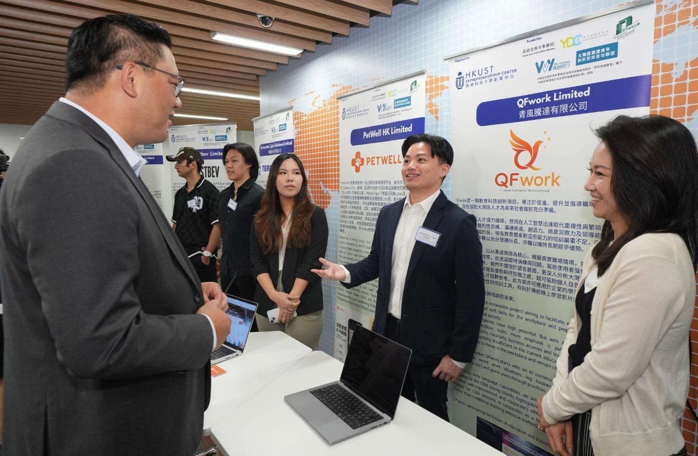
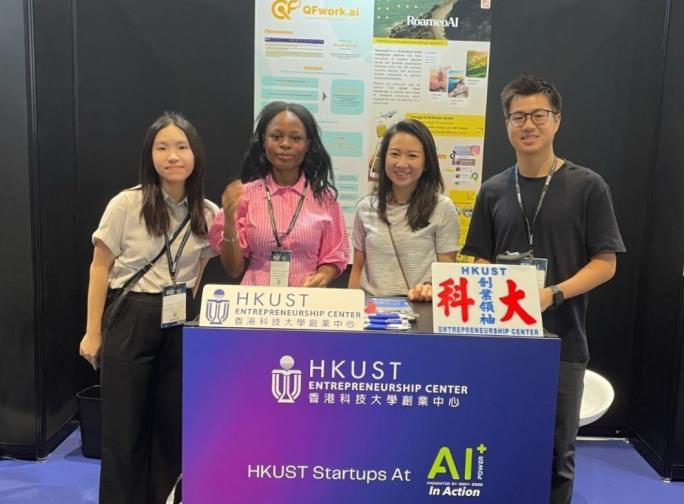

Live practice
AI Trainer for workplace communication
Have a real, face-to-face conversation with an AI partner — then get a full breakdown of your workplace English. Pick a scenario to begin.
- Communication skills training — wording, structure and delivery
- Workplace scenario simulations — interviews, negotiations, presentations, client meetings
- Personalised readiness score — language, voice and presence, measured
🎧 Headphones recommended · you'll be asked for camera & microphone access.
How it works
Five minutes of real conversation, then a report built from what you actually said, how you sounded and how you came across.
AI simulated practice
Rehearse your scenario as if you were interacting with the actual person.
Analysed like a person
We track not only your content, but your facial expression, voice and tone, body language and more.
In-depth report by your AI coach
See your performance immediately, with detailed feedback, improvement suggestions, scoring and more.
Consult a human expert coach
Want to get even better? We offer one-on-one consultations with our expert coaching team, based on your report. Ace any workplace conversation you need.
Sponsored by
Who we are
A Hong Kong team building AI practice tools for workplace English. You will find us at startup and industry events across the city.


Draft copy — the section text above is a placeholder.
Leave it blank and the AI will simply ask you at the start — either way the conversation adapts to you.
Check your camera and mic
Take as long as you need — the AI session hasn't started yet and no call time is being used.
Your call time starts when you join.